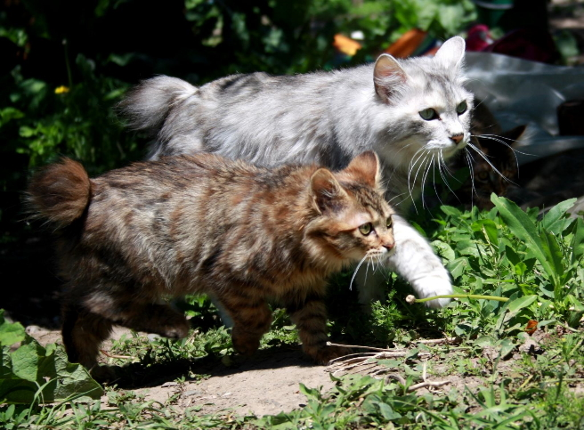

Мы рады приветствовать Вас на сайте питомника курильских бобтейлов!
Наш питомник зарегистрирован по системе WCF сертификат №XXXXXX от 2021 года.
История нашего питомника началась намного раньше, чем был получен сертификат. Первый курильский бобтейл в нашей семье появился в 2012 году. Он прожил вместе с нами 7 лет и, к сожалению, ушел за радугу. Котик ушел, а любовь к курильским бобтейлам осталась. В августе 2022 года, была приобретена основательница нашего питомника кошка Florence.
Работа нашего питомника направлена на получение компактных, длинноногих курильских бобтейлов с хорошо узнаваемой породной головой, максимально соответствующих стандартам породы животных, кроме того, наши питомцы обладают крепким здоровьем и мягким выставочным темпераментом.
Также мы работаем над популяризацией курильского бобтейла среди любителей, а главное, и еще среди «нелюбителей» кошек, путем посещения выставок, а также в средствах массовой информации, включая и Интернет.
